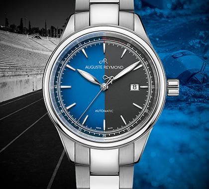
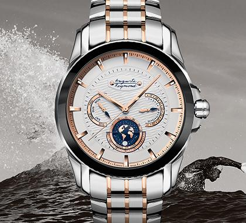
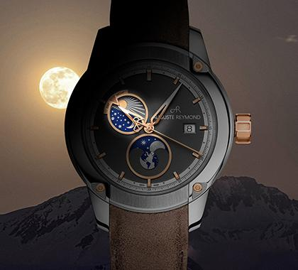

Auguste Reymond is a Swiss watch brand with a rich heritage dating back to 1898. Known for its commitment to craftsmanship and innovation, the brand has established itself as a symbol of elegance and precision in the world of horology. Auguste Reymond offers a diverse range of timepieces that blend traditional Swiss watchmaking techniques with contemporary design elements. From classic dress watches to sporty chronographs, each Auguste Reymond watch is meticulously crafted to meet the highest standards of quality and performance. The brand's dedication to excellence is evident in its use of premium materials, intricate movements, and attention to detail, making Auguste Reymond a preferred choice for watch enthusiasts seeking timeless elegance and reliability.
Auguste Reymond watches are celebrated for their dedication to Swiss watchmaking, artistic detail, and timeless craftsmanship. Founded in 1898, the Auguste Reymond brand grew from a small workshop creating pocket watches to one of the most respected independent names in Swiss horology. Today, Auguste Reymond continues this legacy with a collection of refined mechanical watches, precise quartz watches, and beautifully designed wristwatches for both men and women.
Made in the historic region of Vallée de Joux, the heart of fine Swiss horology, Auguste Reymond watches offer exceptional quality, attention to detail, and a commitment to traditional watchmaking values. Whether you are exploring classic models or contemporary pieces the brand continues to balance heritage with modern innovation.
Auguste Reymond watches for men combine strong aesthetics with reliable Swiss engineering. From bold, masculine silhouettes to refined dress pieces, each model is crafted with precision. The brand is well known for using Unitas movements, automatic movements, and carefully developed calibres designed for accuracy and durability.
Whether you prefer the mechanical charm of a traditional timepiece or the practicality of a modern quartz movement, men’s Auguste Reymond watches offer reliability, refinement, and Swiss-made quality. These watches are ideal for collectors, professionals, and anyone who values long-lasting craftsmanship.
Women’s Auguste Reymond watches offer elegance, refinement, and timeless beauty. Designed with slim profiles, graceful silhouettes, and carefully detailed dials, these watches blend artistic expression with Swiss precision. The brand’s design approach draws inspiration from artistic eras such as the Jazz Age and modern minimalism, resulting in timepieces that complement both everyday wear and formal attire.
Whether you choose a classic quartz model or a refined mechanical design, Auguste Reymond watches for women represent sophistication, quality, and understated luxury.
Inspired by more than a century of innovation, Auguste Reymond has survived major shifts in the watch industry, including the quartz crisis, while remaining an independent company dedicated to its craft. The brand’s early success in Europe and beyond was made possible by the work of skilled artisans in the Auguste Reymond manufacture, supported by experts such as James Choffat, managing director and a key figure in preserving the company’s vision.
Models produced over different time periods show the brand’s commitment to quality, unity, and detailed craftsmanship. From early pocket watches to modern wristwatches, the brand has maintained an unwavering focus on precision and artistry.
1. What makes Auguste Reymond watches special?
Auguste Reymond watches offer Swiss craftsmanship, traditional hand finishing, and a heritage rooted in pocket watches, mechanical expertise, and artistic dial design.
2. Do Auguste Reymond watches feature mechanical and quartz movements?
Yes. The brand offers both mechanical watches with Unitas movements and quartz watches for those who prefer effortless accuracy.
3. Are Auguste Reymond watches for men suitable for everyday wear?
Yes. Auguste Reymond watches for men are designed to be durable and reliable, with strong movements and high-quality materials.
4. Do women’s Auguste Reymond watches come in different styles?
Yes. Women’s Auguste Reymond watches range from classic, minimal designs to artistic models inspired by the Jazz Age and celestial themes.
5. Is Auguste Reymond still an independent Swiss watch brand?
Yes. Auguste Reymond SA continues to operate as an independent company, maintaining full control over its heritage, design philosophy, and Swiss production.
Explore Auguste Reymond watches at ALF, where you will find a curated selection crafted for both men and women. Whether you are searching for Auguste Reymond watches for men, women’s Auguste Reymond watches, or iconic designs like the Heritage 1898 or Orbital Moon, we offer timepieces that represent Swiss tradition and artistic craftsmanship. Visit us online or in-store to find a watch that reflects your individuality and appreciation for Swiss heritage.